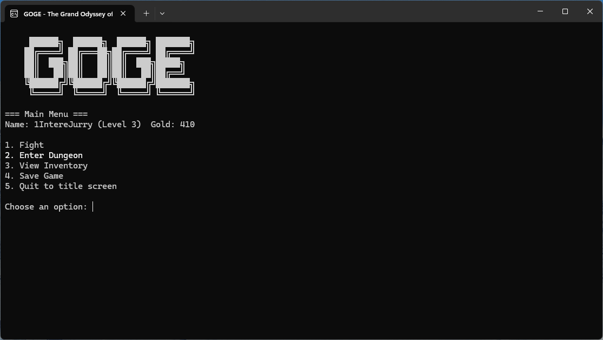

SYSTEM_GOGE
A C#-powered console odyssey. Experience the grid in motion.
FETCH_INSTALLER.MSI
File: GOGE-setup.msi | OS: Windows (x64)
live_execution_preview.gif

[01] INSTALLATION_PROCEDURE
setup.exe --instruction-mode
> Download the GOGE-setup.msi via the button above.
> Run the installer. (Select 'More Info' & 'Run Anyway' if prompted).
> Requirement: .NET 8.0 Runtime must be active.
[02] SOURCE_&_SUPPORT
[03] SYSTEM_LOGS
sys_requirements.log
| OS | Windows 10 / 11 (64-bit) |
| RUNTIME | .NET 8.0 Desktop Runtime |
| UI | Standard Command Prompt / Windows Terminal |